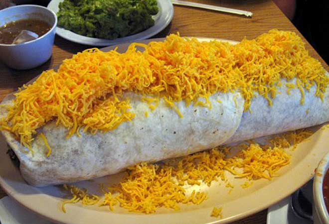

Home
Burrito
Some of the best burritos come from home. All leftovers in a big tortilla has some of the best flavor.
Ingredients
- Tortilla: The biggest you can find
- Cheese: The more fat the better!
- Butter: A whole box
- Another tortilla
- Any edible food that is left over from other meals, for example, potatos, casserole, beans, other burritos.
Manufacturer's Directions
- Warm up the tortilla
- Look in your fridge and find as much food as you can and mix in bowl.
- Fuck it, throw some butter in there too.
- Warm until the tortilla and cheese are both properly melted.
- Place all materials into the tortilla
- Roll torilla with material like a blunt. Come on you know what is ;)
- Some how eat the entire burrito without feeling guilty, impossible.
- Look in the mirror and see what you have done.
